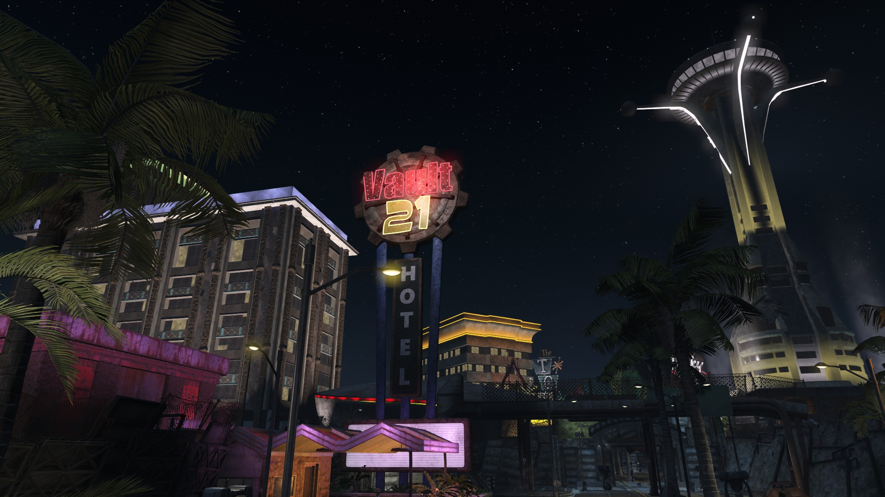
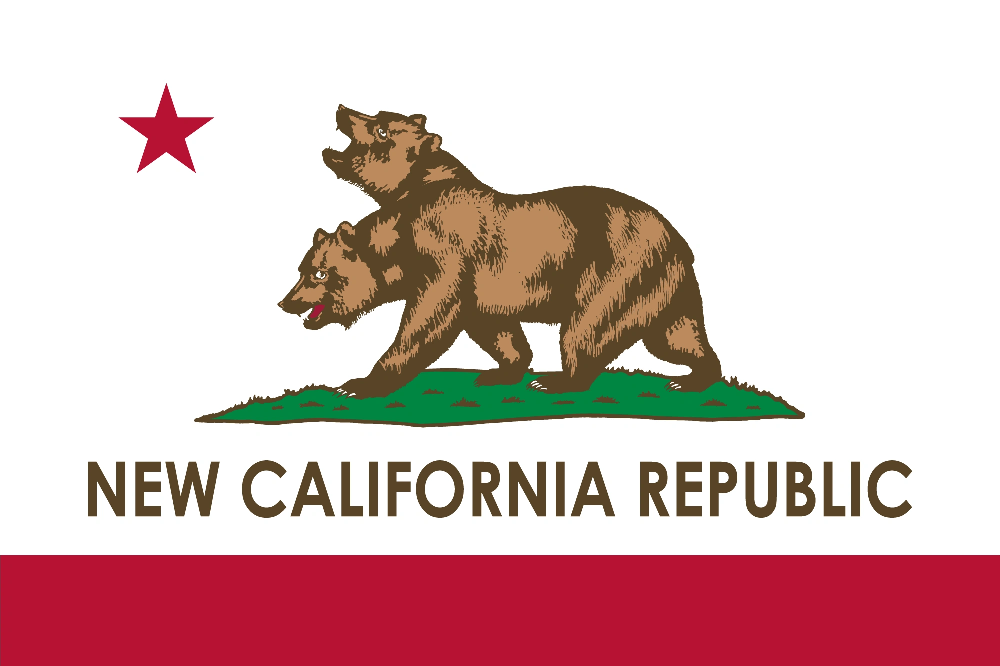
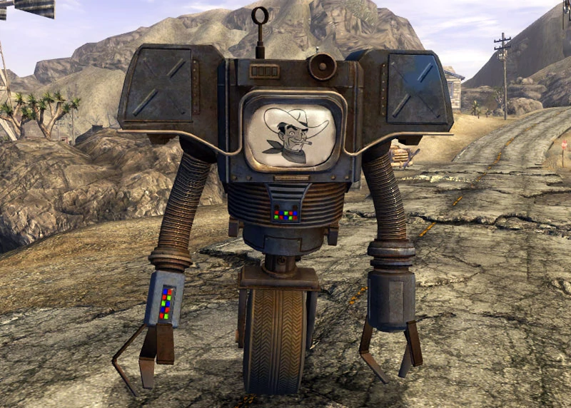

THE NUMBERS DON’T LIE,
OUR VOICES ARE BEING IGNORED.


OUR VOICES ARE BEING IGNORED.
MY WORK
Here are some of my latest lorem work ipsum tipsum.
Click on the images to make
them bigger



CONTACT
Looking to expand our team or listen to your concerns.
We would love your feedback!
Olathe, KS USA
Phone: +00 151515
Email: mail@mail.com
Phone: +00 151515
Email: mail@mail.com
Please submit any interest or feedback using the form below: